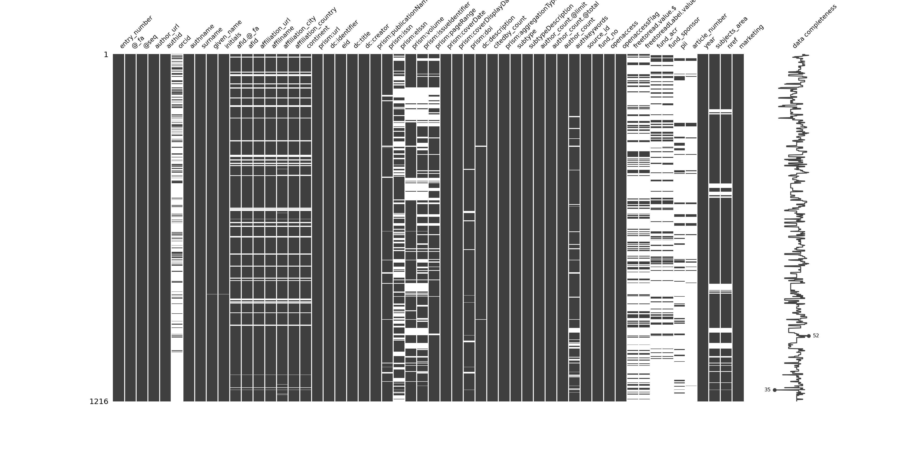

import pandas as pdimport numpy as npfrom itertools import combinationsfrom functools import partialimport networkx as nxfrom ipysigma import Sigmaimport missingno as msnoimport matplotlib.pyplot as pltlist_articles = pd.read_csv("nlp_full_data_final_unique_author_names.csv", sep=';', decimal=',')msno.matrix(list_articles, labels=True, fontsize=10, figsize=(20, 10))

Code
def get_author_info(filtered_articles, columns):# Initialize a dictionary to store information for each column author_info = {col: {} for col in columns} author_info["citations"] = {} # Initialize a dictionary for citations# Iterate through each row in the DataFramefor _, row in filtered_articles.iterrows():# Extract the author name from the row author_name = row['authname']# Sum up the citationsif pd.notna(row['citedby_count']): author_info["citations"][author_name] = author_info["citations"].get(author_name, 0) + row['citedby_count']# Iterate through each column name to gather other informationfor col in columns: value = row[col]# Check if the value is a string and not emptyif pd.notna(value): value =str(value).strip()if author_name in author_info[col]:if value notin author_info[col][author_name]: author_info[col][author_name] +=" | "+ valueelse: author_info[col][author_name] = valuereturn author_infodef create_graph(dataframe, start_year, end_year):# Read the data list_articles = dataframe# Filter articles based on the specified year range filtered_articles = list_articles[(list_articles['year'] >= start_year) & (list_articles['year'] <= end_year)]# Create a list to store author pairs and their details author_pairs = []# Group the filtered dataframe by article number and collect unique author IDs for each article grouped = filtered_articles.groupby('entry_number')[['authid', 'authname']].agg(list).reset_index()# Find author pairs for each articlefor _, row in grouped.iterrows(): entry_number = row['entry_number'] authors = row['authid'] authnames = row['authname']iflen(authors) ==1: author_pairs.append((entry_number, authors[0], authors[0], authnames[0], authnames[0]))eliflen(authors) >1: author_combinations =list(combinations(range(len(authors)), 2))for i, j in author_combinations: author_pairs.append((entry_number, authors[i], authors[j], authnames[i], authnames[j]))# Create a DataFrame for author pairs result_df = pd.DataFrame(author_pairs, columns=['entry_number', 'authid1', 'authid2', 'authname1', 'authname2'])# Create a DataFrame for collaborations and sort it collaboration_df = result_df[["authname1", "authname2"]] collaboration_df = pd.DataFrame(np.sort(collaboration_df.values, axis=1), columns=collaboration_df.columns) collaboration_df['value'] =1 collaboration_df = collaboration_df.groupby(["authname1","authname2"], sort=False, as_index=False).sum()# Initialize the graph G = nx.from_pandas_edgelist(collaboration_df, 'authname1', 'authname2', edge_attr='value', create_using=nx.Graph())# Set edge colors for visualizationfor u, v in G.edges: G[u][v]["color"] ="#7D7C7C"# Add weighted edges to the graphfor index, row in collaboration_df.iterrows(): G.add_edge(row['authname1'], row['authname2'], weight=row['value'])# Compute and set multiple node attributes metrics = {'centrality': nx.degree_centrality,'betweenness': nx.betweenness_centrality,'closeness': nx.closeness_centrality,'eigenvector_centrality': nx.eigenvector_centrality,'burt_constraint_weighted': partial(nx.constraint, weight="value"),'burt_constraint_unweighted': nx.constraint }for attr, func in metrics.items(): nx.set_node_attributes(G, func(G), attr)# Define the list of columns for which to collect information# Define the list of columns for which to collect information columns_to_collect = ['affilname', 'affiliation_country', 'dc:title', 'prism:publicationName', 'subtypeDescription', 'year', 'citedby_count', 'subjects_area', 'authkeywords']# Use the function to get the author information author_info = get_author_info(filtered_articles, columns_to_collect)# Add the collected information to the nodes in the graphfor col in columns_to_collect: nx.set_node_attributes(G, author_info[col], col) nx.set_node_attributes(G, author_info['citations'], 'citations')# Create the html graph with Sigma from ipysigma Sigma.write_html(G, default_edge_type ="curve", # Default edge type clickable_edges =True, # Clickable edges edge_size ="value", # Set edge size fullscreen =True, # Display in fullscreen label_density =2, # Label density label_font ="Helvetica Neue", # Label font max_categorical_colors =10, # Max categorical colors node_border_color_from ='node', # Node border color from node attribute node_color ="community", # Set node colors node_label_size ="citations", # Node label size node_label_size_range = (12, 36), # Node label size range node_metrics = {"community": {"name": "louvain", "resolution": 1}}, # Specify node metrics node_size ="citations", # Node size node_size_range = (3, 30), # Node size range path =f"networks/authors/{start_year}_{end_year}_sigma_test.html", # Output file path start_layout =3, # Start layout algorithm#node_border_color = "black", # Node border color#edge_color = "#7D7C7C" # Edge color# node_label_color = "community" # Node label color )return G# Example usageG_2015_2019 = create_graph(list_articles, 2013, 2017)
Source Code
---title: "Systematic literature review"bibliography: references.bibtitle-block-banner: truesubtitle: "test test test test"author: - name: Olivier Caron email: olivier.caron@dauphine.psl.eu affiliations: name: "Paris Dauphine - PSL" city: Paris state: France - name: Christophe Benavent email: christophe.benavent@dauphine.psl.eu affiliations: name: "Paris Dauphine - PSL" city: Paris state: Francedate : "last-modified"toc: truenumber-sections: truenumber-depth: 10format: html: theme: light: yeti #dark: darkly code-fold: true code-summary: "Display code" code-tools: true #enables to display/hide all blocks of code code-copy: true #enables to copy code grid: body-width: 1000px margin-width: 100px toc: true toc-location: leftexecute: echo: true warning: false message: falseeditor: visualfig-align: "center"highlight-style: ayucss: styles.cssreference-location: margin---```{r}``````{python}#| label: libraries-data#| column: page#| fig-dpi: 600import pandas as pdimport numpy as npfrom itertools import combinationsfrom functools import partialimport networkx as nxfrom ipysigma import Sigmaimport missingno as msnoimport matplotlib.pyplot as pltlist_articles = pd.read_csv("nlp_full_data_final_unique_author_names.csv", sep=';', decimal=',')msno.matrix(list_articles, labels=True, fontsize=10, figsize=(20, 10))``````{python}def get_author_info(filtered_articles, columns):# Initialize a dictionary to store information for each column author_info = {col: {} for col in columns} author_info["citations"] = {} # Initialize a dictionary for citations# Iterate through each row in the DataFramefor _, row in filtered_articles.iterrows():# Extract the author name from the row author_name = row['authname']# Sum up the citationsif pd.notna(row['citedby_count']): author_info["citations"][author_name] = author_info["citations"].get(author_name, 0) + row['citedby_count']# Iterate through each column name to gather other informationfor col in columns: value = row[col]# Check if the value is a string and not emptyif pd.notna(value): value =str(value).strip()if author_name in author_info[col]:if value notin author_info[col][author_name]: author_info[col][author_name] +=" | "+ valueelse: author_info[col][author_name] = valuereturn author_infodef create_graph(dataframe, start_year, end_year):# Read the data list_articles = dataframe# Filter articles based on the specified year range filtered_articles = list_articles[(list_articles['year'] >= start_year) & (list_articles['year'] <= end_year)]# Create a list to store author pairs and their details author_pairs = []# Group the filtered dataframe by article number and collect unique author IDs for each article grouped = filtered_articles.groupby('entry_number')[['authid', 'authname']].agg(list).reset_index()# Find author pairs for each articlefor _, row in grouped.iterrows(): entry_number = row['entry_number'] authors = row['authid'] authnames = row['authname']iflen(authors) ==1: author_pairs.append((entry_number, authors[0], authors[0], authnames[0], authnames[0]))eliflen(authors) >1: author_combinations =list(combinations(range(len(authors)), 2))for i, j in author_combinations: author_pairs.append((entry_number, authors[i], authors[j], authnames[i], authnames[j]))# Create a DataFrame for author pairs result_df = pd.DataFrame(author_pairs, columns=['entry_number', 'authid1', 'authid2', 'authname1', 'authname2'])# Create a DataFrame for collaborations and sort it collaboration_df = result_df[["authname1", "authname2"]] collaboration_df = pd.DataFrame(np.sort(collaboration_df.values, axis=1), columns=collaboration_df.columns) collaboration_df['value'] =1 collaboration_df = collaboration_df.groupby(["authname1","authname2"], sort=False, as_index=False).sum()# Initialize the graph G = nx.from_pandas_edgelist(collaboration_df, 'authname1', 'authname2', edge_attr='value', create_using=nx.Graph())# Set edge colors for visualizationfor u, v in G.edges: G[u][v]["color"] ="#7D7C7C"# Add weighted edges to the graphfor index, row in collaboration_df.iterrows(): G.add_edge(row['authname1'], row['authname2'], weight=row['value'])# Compute and set multiple node attributes metrics = {'centrality': nx.degree_centrality,'betweenness': nx.betweenness_centrality,'closeness': nx.closeness_centrality,'eigenvector_centrality': nx.eigenvector_centrality,'burt_constraint_weighted': partial(nx.constraint, weight="value"),'burt_constraint_unweighted': nx.constraint }for attr, func in metrics.items(): nx.set_node_attributes(G, func(G), attr)# Define the list of columns for which to collect information# Define the list of columns for which to collect information columns_to_collect = ['affilname', 'affiliation_country', 'dc:title', 'prism:publicationName', 'subtypeDescription', 'year', 'citedby_count', 'subjects_area', 'authkeywords']# Use the function to get the author information author_info = get_author_info(filtered_articles, columns_to_collect)# Add the collected information to the nodes in the graphfor col in columns_to_collect: nx.set_node_attributes(G, author_info[col], col) nx.set_node_attributes(G, author_info['citations'], 'citations')# Create the html graph with Sigma from ipysigma Sigma.write_html(G, default_edge_type ="curve", # Default edge type clickable_edges =True, # Clickable edges edge_size ="value", # Set edge size fullscreen =True, # Display in fullscreen label_density =2, # Label density label_font ="Helvetica Neue", # Label font max_categorical_colors =10, # Max categorical colors node_border_color_from ='node', # Node border color from node attribute node_color ="community", # Set node colors node_label_size ="citations", # Node label size node_label_size_range = (12, 36), # Node label size range node_metrics = {"community": {"name": "louvain", "resolution": 1}}, # Specify node metrics node_size ="citations", # Node size node_size_range = (3, 30), # Node size range path =f"networks/authors/{start_year}_{end_year}_sigma_test.html", # Output file path start_layout =3, # Start layout algorithm#node_border_color = "black", # Node border color#edge_color = "#7D7C7C" # Edge color# node_label_color = "community" # Node label color )return G# Example usageG_2015_2019 = create_graph(list_articles, 2013, 2017)```